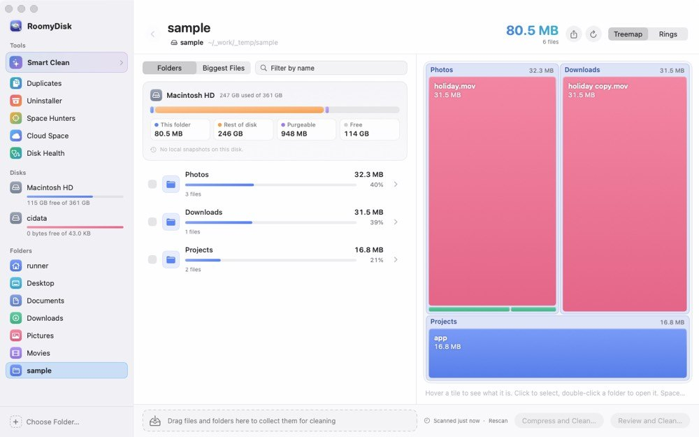

Smart Clean
Finds junk that is safe to remove: app caches, logs, Xcode build data, simulator caches, npm, pip, Homebrew and Cargo caches, and installers left in Downloads. Caches of macOS and of apps that are open are left alone.
⇧⌘K
Free and open source · macOS 14 or later
RoomyDisk turns your disk into a map you can walk through, finds the caches, copies and forgotten backups taking up space, and clears them safely. Everything goes to the Trash first, so Put Back still works.
The tour
Scan your home folder, any folder or a whole disk. Folders are read in parallel and hard links are counted once, so the totals add up.

Folders sorted by size beside a treemap of the same folder. Click a tile to select it, double-click to go in.
The tools
Finds junk that is safe to remove: app caches, logs, Xcode build data, simulator caches, npm, pip, Homebrew and Cargo caches, and installers left in Downloads. Caches of macOS and of apps that are open are left alone.
⇧⌘K
See the space a scan can't reach, local snapshots, and what macOS frees by itself. Thin Time Machine snapshots after you confirm.
Identical files of 1 MB or more, compared by size, then their first and last 64 KB, then SHA-256. The plainest, oldest copy is kept.
⇧⌘D
Removes an app with its caches, settings, containers and launch agents. Only files named by the app's exact identifier count. Anything less certain waits for your review.
⇧⌘U
Old iPhone and iPad backups, downloads you never opened, Mail attachment copies and photos that look almost the same, each with a total that counts up.
⇧⌘H
Free space without deleting anything. Local copies of iCloud Drive, Dropbox, OneDrive, Google Drive and Box files are removed, and the files stay in the cloud. Anything not uploaded yet is kept.
A card for every internal and external disk: model, connection, firmware and S.M.A.R.T. status, with a verdict and what to do about it. Strictly read-only, no admin rights, and no made-up numbers: what macOS keeps from apps says "Not available".
⇧⌘I
Safety
A disk cleaner earns trust by what it refuses to do. These rules are in the code, and the code is open.
Every clean moves items to the Trash, so Put Back still works. Emptying it, the one step that can't be undone, always asks first.
Each clean opens a review with every item and its size. Guesses, such as leftovers of removed apps, start unticked.
System folders, Keychains, Photos libraries, Mail's own folder, iCloud Drive and parts of device backups are blocked. Git repositories and running apps get a warning.
Release builds are signed with a Developer ID, notarized by Apple and kept current with signed Sparkle updates.
Free, open source and made for macOS 14 or later.